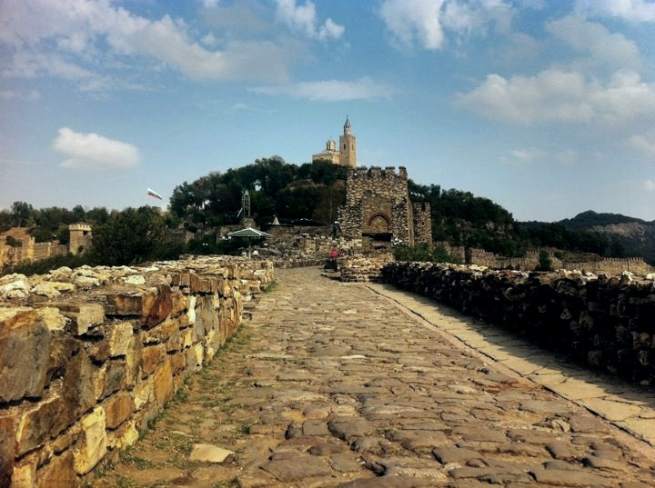
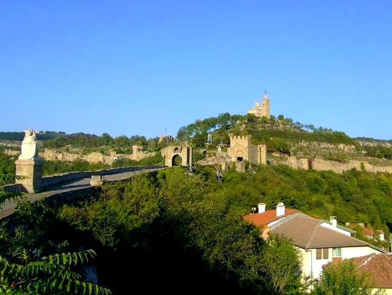

Крепостта "Царевец"
Опознай родината, за да я обикнеш!
Алеко Константинов


Архитектурно-музейният резерват „Царевец” е един от най-посещаваните туристически обекти в България. Разположен е на хълма Царевец, който се намира в старата част на град Велико Търново.
Хълмът е обитаван още от III хил. пр. Хр. През V-VII в. н.е. тук се е намирал най-големият град на Византийската империя в провинция Долна Мизия – Зикидева. През IX в. тук възниква старобългарско селище, което бързо се разраства. Изграждането на крепостната стена, която е запазена и до днес, започва през XII в. Стената е с дължина 1100 м, дебела на места до 3,40 м и висока над 10 м.
Крепостта е имала три входа, които виждаме и днес. Главният вход, който е служил за отбрана от кули, е разположен от запад. Вторият вход е т.нар. Малка порта (Асеновата) и се намира на северозападната крепостна стена. Третият вход – Френкхисарската порта, е в югоизточния край на крепостта и се е охранявал от бойна кула. Тази кула е известна като Балдуиновата кула, на името на латинския император Балдуин Фландърски, пленен в битката при Одрин през 1205 г. от цар Калоян. Легендата разказва, че след битката Балдуин бил затворен в тази кула, където по-късно умира. В централната част на крепостта е разположен дворцовият комплекс – няколко постройки, обградени от вътрешна каменна стена, две бойни кули и два входа. Включва тронна зала, дворцова църква и царски покои.
През 1185 г., след като Търново е провъзгласен за столица на Второто българско царство, Царевец се превръща в нейно главно укрепление и дом за аристокрацията. Повече от 200 години в града кипи политически, икономически и културен живот, което го прави един от най-големите градове в европейския югоизток, а крепостта – най-важната в България. В най-северния край на Царевец се намира издаден към р. Янтра скален нос, който е известен като Лобната скала. През XI – XIV в. от нея в реката са хвърляли предателите на държавата, а през XVI в. на това място е бил изграден манастир.
Реставрацията на крепостта Царевец започва през 1930 г. и е завършена през 1981 г. по повод честванията на 1300 години от създаването на българската държава. Днес отлично възстановени са пътят към главния вход с големия портал, внушителните стени и бойни кули, сред които и Балдуиновата. На самия връх на Царевец се намира Патриаршеската църква, възстановена през 1981 г. Освен с мащаба и архитектурните си качества, тя впечатлява с иконописите, пресъздаващи възхода и залеза на Второто българско царство. Под нея се намира царският дворец. Разкопките показват основите на 470 жилищни постройки, странноприемница, жилища на аристокрацията, 23 храма и 4 градски манастира. Открити са уникални части от златотъкано облекло и златни украшения от периода на Втората българска държава.
Днес архитектурно-музейният резерват „Царевец” е уникално място за среща с миналото на България. Достъпът до всички обекти е улеснен от инфраструктурата, изградена в автентичен за пресъздадената епоха стил. Указателните табели дават допълнителна информация за предназначението и историята на обектите. Посетителите могат да се изкачат до върха на кулата камбанария, откъдето се открива гледка към града. Уникална атракция е аудиовизуалният спектакъл „Звук и светлина”, който посредством стотици цветни светлини, музика, камбанен звън и лазери представя моменти от българската история.
“Място оживяло от миналото ни, носещо със себе историята на българите от непознатото за нас време.” – споделят хора посетили резервата
 